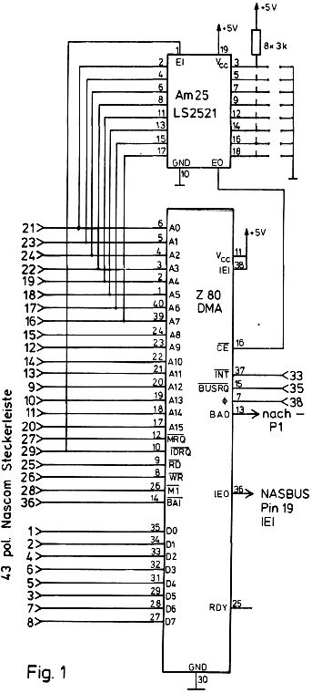
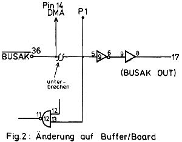

Nascom Journal |
September 1981 · Ausgabe 9 |
andere Aufgaben einzusetzen. Der Phantasie des Programmierers sind hier keine Grenzen gesetzt. Es würde im Rahmen dieser kurzen Beschreibung zu weit führen, die Eigenschaften des DMA vollständig zu beschreiben. (siehe dazu Zilog Z-80 DMA Manual)
Der Schaltungsaufwand ist denkbar einfach. Außer dem DMA Baustein wird noch ein Decodierungs-IC
benötigt zur Auswahl der I/O Adresse des DMA. Hierfür wurde der 8-bit Comparator AM25LS2521 von AMD verwendet. Damit kann über einen DIL-Schalter jede beliebige I/O Adresse eingestellt werden.
Die beiden ICs werden auf dem leeren Teil des Bufferboards befestigt (z.B. IC-Sockel auf die Platine kleben). Die Verdrahtung der Bauteile wird gemäß Schaltbild (Fig.1) vorgenommen. Da man hier üblicherweise Schaltdraht verwendet, entsteht auf der Unterseite der Platine ein wüster Drahtverhau. Damit es nach dem Wiedereinschalten des Nascom nicht zu unliebsamen Überraschungen kommt, ist hier mit großer Sorgfalt zu arbeiten.
Die Adreß-(A0 – A15), Daten-(D0 – D7) und Kontroll-leitungen (MREQ, IORQ, RD, WR, M1, INT, BUSAK, TAKT) des DMA werden mit den entsprechenden Pins der 43-poligen Steckerleiste auf der Bufferplatine verbunden. (Achtung: Nicht mit dem 73 pol. NASBUS).

Als einzige Hardwareänderung auf dem Bufferboard ist die BUSAK-Leitung zu unterbrechen. Die BUSAK-Leitung, die direkt von der CPU kommt, wird nun mit dem BAI-Pin des DMA verbunden. Der BAO-Pin wird mit Pin 13 IC 12 und Pin 5 IC 9 verbunden (siehe Fig.2), Der DMA hat damit die höchste Buspriorität. Bei Multi-DMA Einsatz hat dieser DMA immer Vorrang bei Buszugriffen vor niederpriorisierten DMAs.
In der Interrupt Daisy Chain Kette hat der DMA ebenfalls die höchste Priorität. IEI des DMA ist gegen +5V und IEO mit IEI NASBUS Pin 19 zu verbinden. (Anwender, die den PIO auf der Nascomplatine verwenden, müssen diesen IEI Pin von +5V abtrennen und mit IEO Pin des DMA verbinden).
| Seite 6 von 28 |
|---|